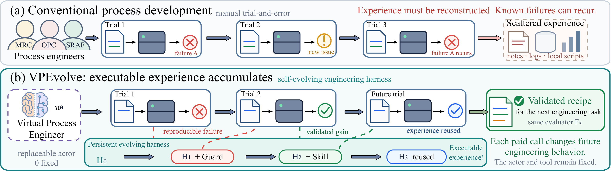
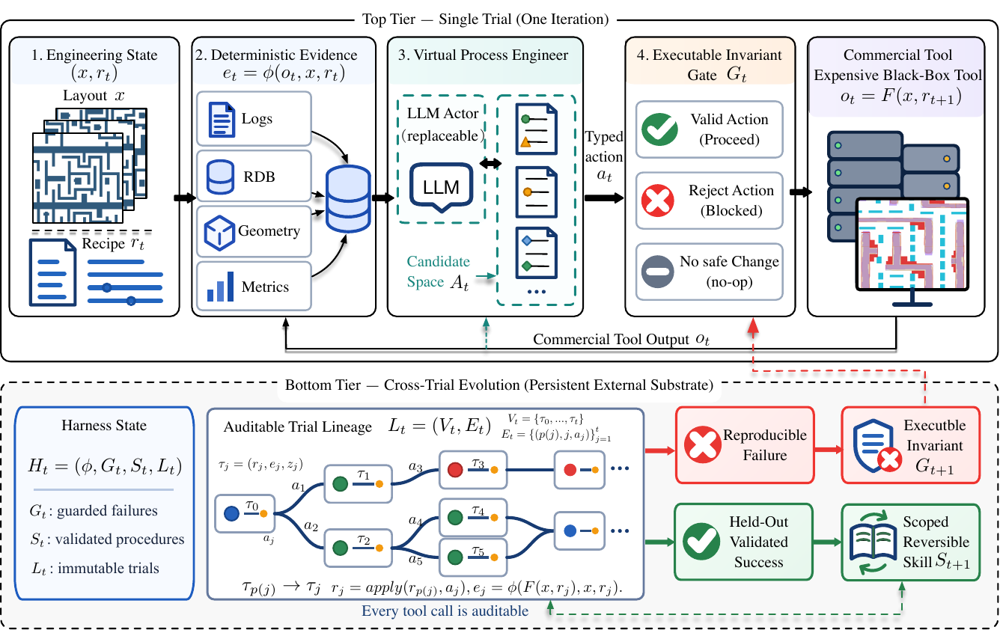
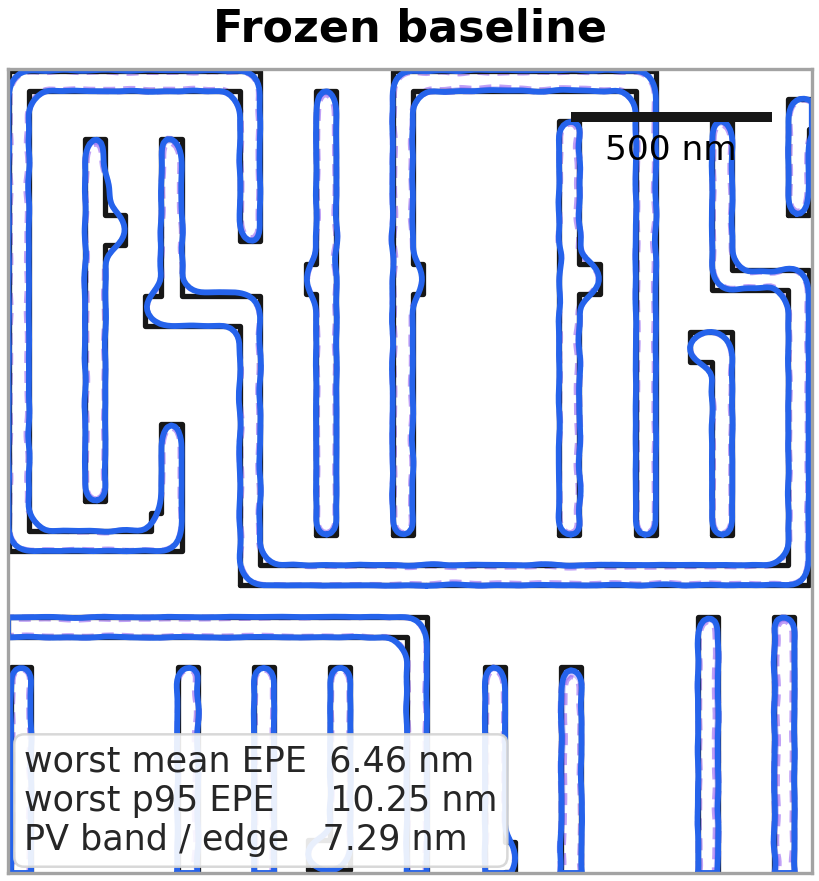
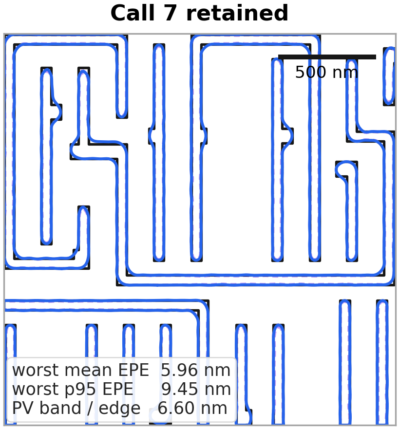
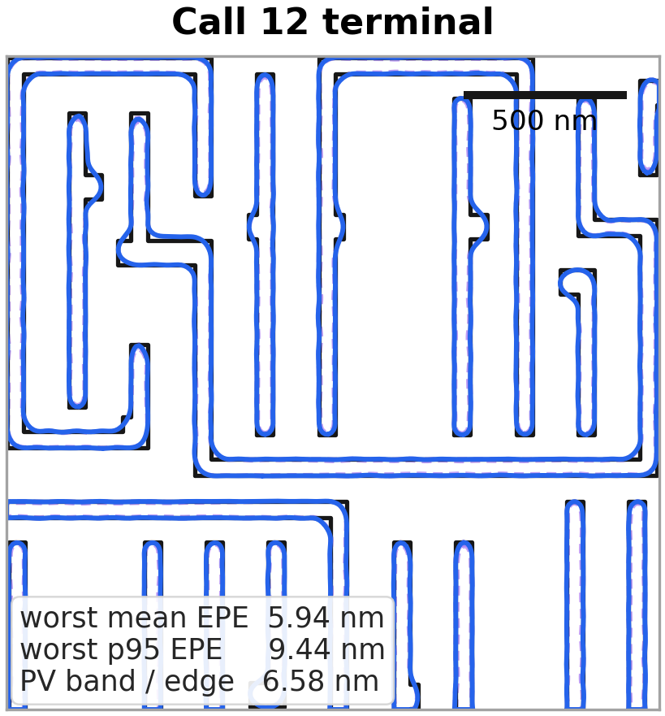
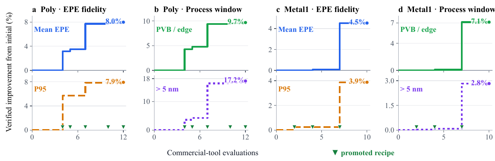
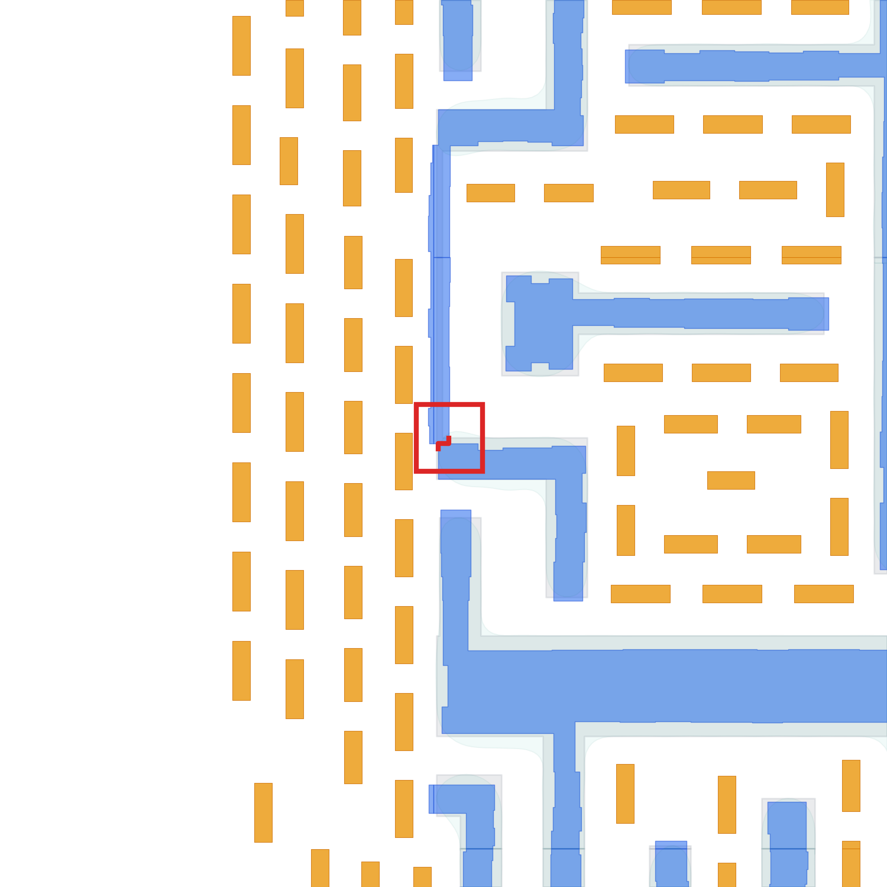
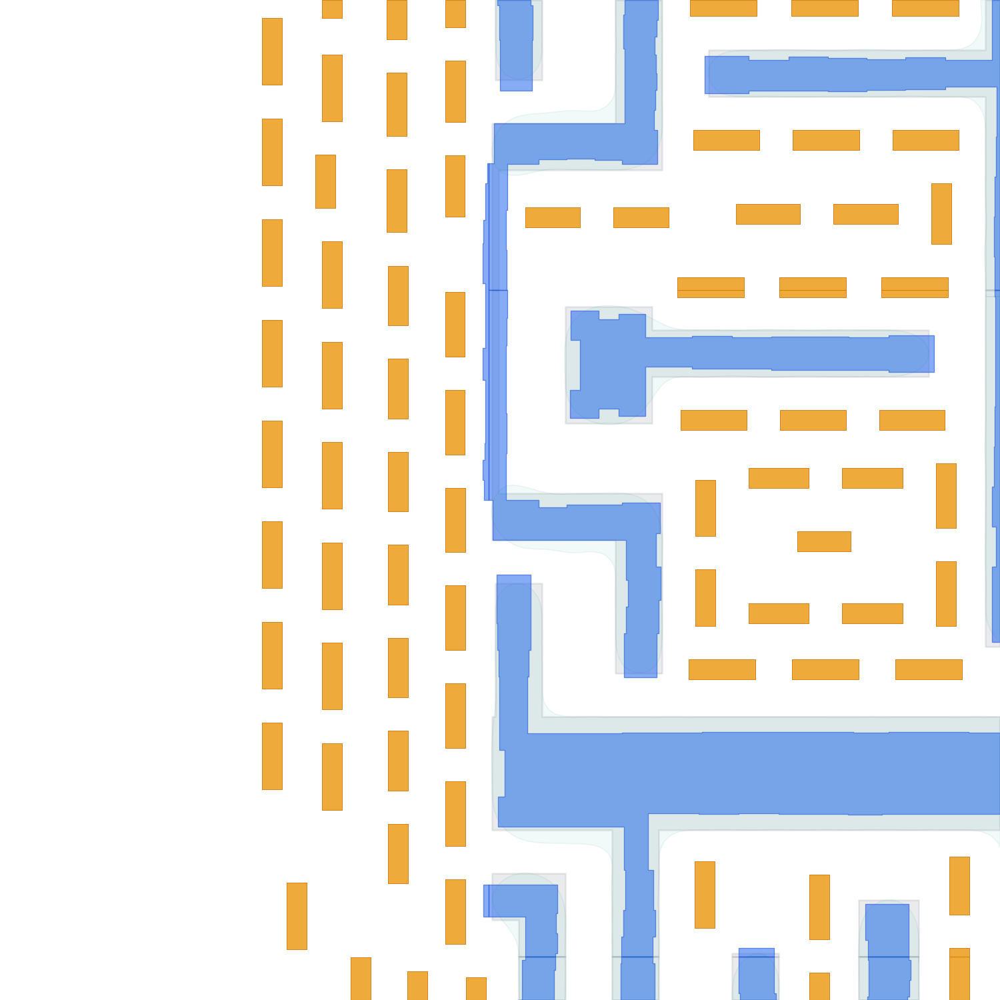

Read the tool, not a story.
Logs, geometry, result databases, and registered physical metrics become deterministic evidence.
VPEVOLVE · VIRTUAL PROCESS ENGINEERING
VPEvolve turns costly runs of strict black-box tools into verified, executable experience. The language-model actor remains replaceable; the harness remembers what is safe, useful, and reusable.
Anonymous research project · ICLR submission materials
Human trial-and-error becomes cumulative, executable experience.

02 / The shift
Conventional process development leaves hard-won knowledge spread across specialists and individual runs. VPEvolve makes that knowledge explicit, testable, and available to the next decision.
Logs, geometry, result databases, and registered physical metrics become deterministic evidence.
The actor proposes typed, gated recipe actions instead of editing unconstrained text.
Reproduced failures become guards; held-out gains become scoped skills.
03 / The method
Persistent capability lives in deterministic evidence, executable guards, reusable skills, and an auditable trial lineage - outside model weights.

Raw artifacts are parsed into typed evidence before they reach the actor.
Every proposal crosses an executable invariant gate before it can spend a tool evaluation.
Every lesson remains tied to the recipe, evaluator, layout, and exact parent that produced it.
04 / Executable experience
The harness preserves the action, evidence, parent state, and evaluator contract needed to reproduce - and safely reuse - each lesson.
A conflicting SRAF width is reproduced, attributed to a minimal recipe diff, and compiled into two executable predicates. The same action class is rejected before the evaluator is called again.
✓ 0 paid calls for a repeated encoded failure05 / Physical outcome
Selected recipes improve registered EPE and PVB metrics under a frozen five-corner evaluator while preserving manufacturability.



06 / Evaluation
Matched replay freezes the task, evidence, schema, context budget, case order, and evaluator.
Full VPEvolve exceeds Raw, ReAct, and three adapted persistent-memory conditions for every actor.

The layout, process model, evaluator, numeric parameters, and crop remain fixed. The admitted structural edit is the only semantic recipe change.


07 / Open evidence
The planned release covers Poly and Metal1 clips. Audited development cases preserve typed edits, tool artifacts, metrics, and lineage.
VPEvolve
A virtual process engineer should not forget what the last model learned. VPEvolve makes verified experience portable, executable, and ready for the next tool run.